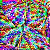

Two complementary tracks for attack analysis and defense-cycle evaluation across YOLO generations
April 2026
These are complementary sibling repos, not one shared-image runtime loop: the attack track uses a 48-image common manifest, while the defense track runs automated cycles on a COCO subset and writes its own reports.
Patch size: 100×100 px · Image size: 640×640 · 2.4% of total pixels
⚠ Within v26n runs, better objective convergence did not yield better suppression — see The v26n Paradox
| Patch source | → v8n | → v11n | → v26n |
|---|---|---|---|
| v8n | 90% ★ |
33.3% |
14.0% |
| v11n | 50.0% |
72.7% ★ |
9.3% |
| v26n | 45.0% |
24.2% |
16.3% ★ |
★ = white-box (patch trained and tested on same model) · off-diagonal = black-box transfer
Trained simultaneously against two models: v8n+v11n → v8n 85% · v8n+v11n → v11n 66.7% · v8n+v26n → v26n 18.6% (best v26n result)
v11n→v8n = 50.0% > v8n→v11n = 33.3%
The asymmetry remains in the current v2 artifacts: newer-generation patches still reach backward better than older patches reach forward.
v26n remains the hardest target in this study. Nothing in the direct matrix exceeds 16.3% against it, and even the best joint patch only reaches 18.6%. Yet the v26n patch still transfers out at 45.0% and 24.2%.
| Quality | Suppression | vs. undefended |
|---|---|---|
| — none — | 85% | baseline |
| quality = 95 | 95% | ▲ +10 pp |
| quality = 85 | 90% | ▲ +5 pp |
| quality = 75 | 90% | ▲ +5 pp |
| quality = 50 | 80% | ▼ −5 pp (clean −29 pp) |
High variance across seeds. At 95% and 90% retention there is no reliable benefit. Some 85% retention and isolated 90% retention seeds reduce suppression, but the effect is unstable and often trades off against clean detections.
| σ | Suppression | vs. undefended |
|---|---|---|
| — none — | 85% | baseline |
| σ = 1.0 | 90% | ▲ +5 pp |
| σ = 2.0 | 100% | ▲ +15 pp |
| σ = 3.0 | 95% | ▲ +10 pp |
Adversarial patches concentrate signal in a dense region. Unlike distributed pixel perturbations, the patch survives lossy operations — blur suppresses high-frequency clean texture while leaving the patch's dominant structure intact. Standard preprocessing defenses are not designed for this threat model.
The optimized objective converged on the scored head.
final_det_loss = 0.108 on the one2many path.
Suppression: only 16.3%.
YOLO26n uses end-to-end Hungarian matching (head_end2end: true).
one2many auxiliary headone2one head for final detections| Experiment | Loss | Suppression |
|---|---|---|
Cold start · one2many loss | 0.108 | 16.3% |
| Warm start from v8n 90% patch | 0.103 | 14.0% |
Cold start · one2one loss (v3) | 0.094 | 11.6% |
Better loss convergence → less suppression. The relationship is inverted.
YOLO26n shows strong resistance to this attack class in the current setup. The matching architecture decouples the optimized objective from the inference path, so targeting either head in isolation did not break through. This points to a different attack formulation, not just more optimization.
This slide uses the latest canonical cycle from YOLO-Bad-Triangle. The repo records 22 cycles overall, but this snapshot is cycle 22 from the current attack_then_defense series. Latest validated attacks: DeepFool, dispersion reduction, and square. Active defenses: JPEG, median filter, bit-depth reduction, and c_dog.
| Config | mAP50 | vs clean |
|---|---|---|
| Clean baseline | 0.600 | — |
| Worst latest-cycle attack dispersion_reduction | 0.238 | −60% |
| Best latest-cycle defended config square + c_dog | 0.394 | −34% |
DPC-UNet denoiser checkpoint finetuned on adversarial image pairs (square ×5 oversample + DeepFool + blur + square pairs). Candidate deployed only after clean A/B comparison against the current c_dog checkpoint.
No universal defense has emerged. In the current canonical series, c_dog is strongest on square, while median preprocessing is stronger on deepfool. Finetuning is clean-safe but has not yet produced a measurable robustness gain.
Checkpoint promotion is a separate clean A/B step for the c_dog denoiser: deploy only if the candidate does not regress versus the current checkpoint.
A DPC-UNet denoiser that preprocesses inputs before YOLO inference. In cycle 22, square + c_dog improves mAP50 from 0.363 to 0.394. It is not the strongest defense on every attack.
Current snapshot: square attack 0.363 → square + c_dog 0.394
Split-screen: clean YOLO detections on the left, patch digitally overlaid on the right.
Patch exported at 300 DPI, 8"×8".
Physical demos underperform digital because printer colour shift, lighting, and view angle perturb the patch.
NPS loss during training partially compensates.

YOLOv8n patch — 90% suppression
100×100 px · shown 2×
Two complementary repos, not one merged pipeline: Adversarial_Patch reports cross-generation patch training and transfer on YOLOv8n, YOLO11n, and YOLO26n; YOLO-Bad-Triangle reports 22 recorded defense-cycle artifacts, with current canonical trends taken from the post-switch series.
YOLO26n's end-to-end matching breaks the usual assumption that optimizing the attack objective will directly reduce detections.
Does the NMS-free shift create a new attack class, or does it port from DETR literature? What attack formulation breaks through the Hungarian matching layer? Physical robustness at scale.
Attack repo → github.com/Cmaddock99/Patch_Yolo
Defense repo → github.com/Cmaddock99/YOLO-Bad-Triangle